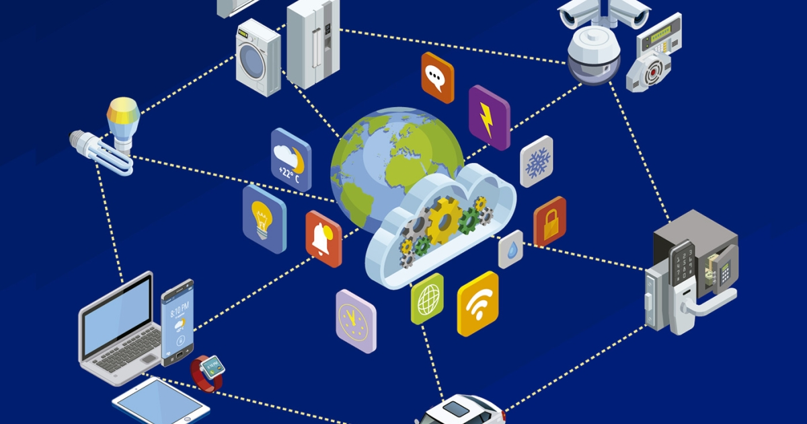

El Internet ha sido una de las invenciones más revolucionarias de la historia moderna. Desde su nacimiento en la década de 1960 como un proyecto militar conocido como ARPANET, su crecimiento ha sido exponencial. A mediados de los años 90, Internet comenzó a expandirse a nivel global, permitiendo a millones de personas conectarse sin importar la distancia.
La conectividad global ha transformado la manera en que nos comunicamos. Hoy en día, es posible enviar un mensaje, hacer una videollamada o compartir información al instante desde cualquier parte del mundo. Esto ha derribado fronteras, facilitado el intercambio cultural y permitido el surgimiento de nuevas comunidades virtuales.
Gracias al Internet, servicios como el correo electrónico, las redes sociales, los motores de búsqueda y el comercio electrónico han cobrado vida. Plataformas como Google, Facebook y Amazon no solo han cambiado la economía, sino también el comportamiento de la sociedad. La información está al alcance de un clic, y la velocidad con la que se difunde ha cambiado el ritmo de nuestras vidas.
La conectividad también ha tenido un impacto significativo en países en desarrollo, permitiendo el acceso a recursos educativos, médicos y laborales. Aunque aún existen desafíos, como la brecha digital, el acceso a Internet continúa expandiéndose, acercándonos a una sociedad cada vez más interconectada.
